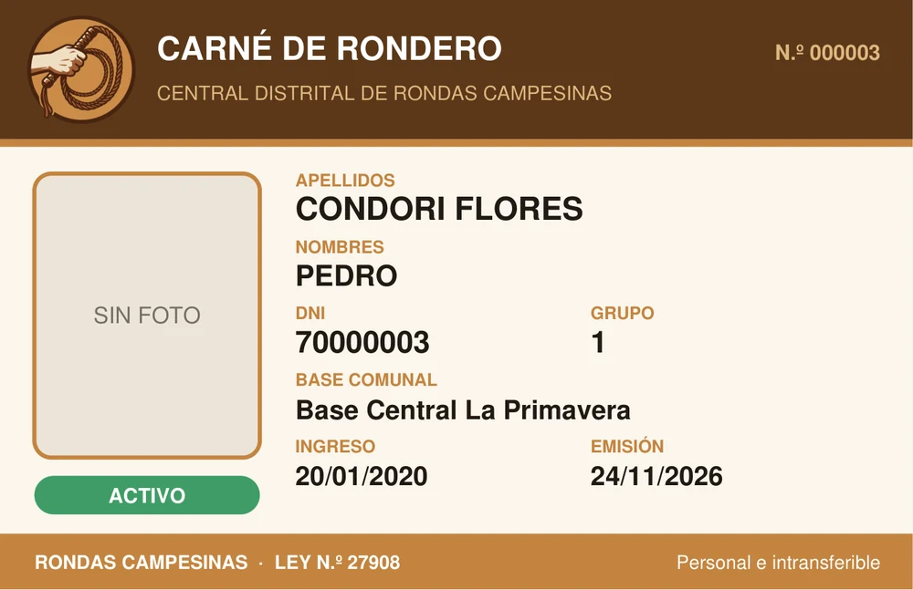
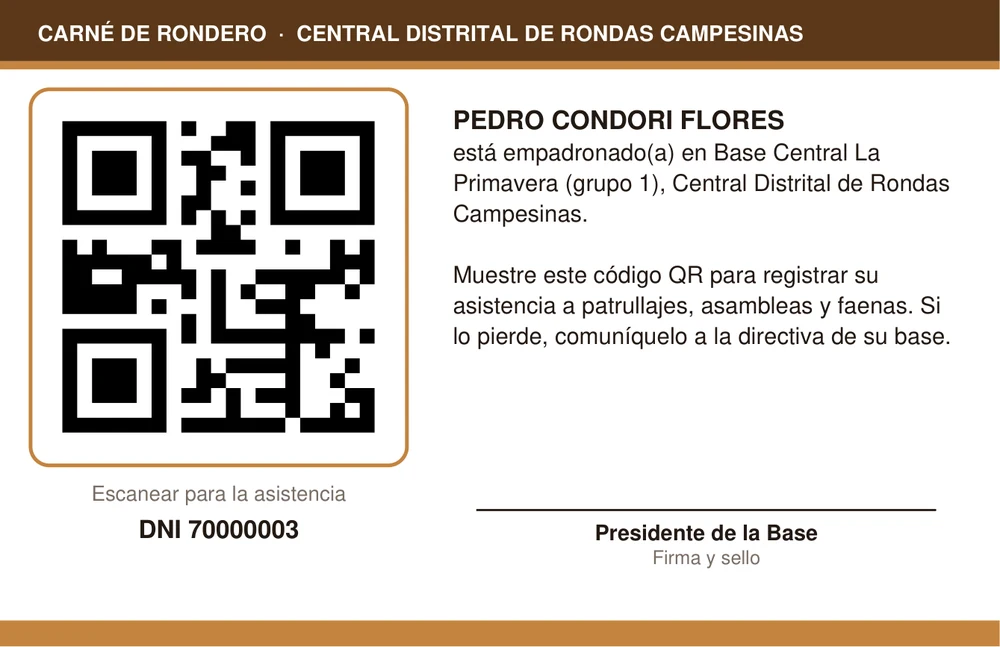

Padrón de ronderos
Registro con foto, DNI y base. Nadie se borra: se da de baja y queda la historia.
FuncionandoUn sistema hecho para las rondas campesinas: ordena el padrón, emite carnets con código QR, toma asistencia en segundos, redacta las actas de justicia comunal y entrega reportes al instante. El siguiente paso es una app en el celular de cada rondero.
Hoy casi todo se anota a mano. Eso hace el trabajo lento y, peor aún, la información se pierde justo cuando más se necesita.
Se mojan, se pierden o quedan desactualizados. Saber cuántos ronderos activos hay toma días.
Sin un formato único, fáciles de falsificar y difíciles de verificar.
Pasar lista a lápiz en cada patrullaje, asamblea o faena quita tiempo y genera reclamos.
Cada caso se redacta desde cero; los antecedentes de una persona no se encuentran.
Para informar a la central o a las autoridades hay que contar y sumar a mano.
Un robo o abigeato se avisa por llamadas sueltas; la base se entera tarde.
Nuestra propuesta: una sola plataforma para toda la central distrital, sencilla de usar y pensada para personas que no son expertas en computadoras.
Todo esto ya está construido y probado en el sistema web. Se usa desde una computadora, una tablet o el navegador del celular.
Registro con foto, DNI y base. Nadie se borra: se da de baja y queda la historia.
FuncionandoListo para imprimir por ambas caras, con foto, datos, estado y firma del presidente.
FuncionandoLos ronderos se reparten en grupos (por apellido o a mano) para los turnos de patrullaje.
FuncionandoPatrullajes, asambleas y faenas en un calendario; se convoca a todos, a un grupo o a una lista.
FuncionandoSe escanea el carnet con la cámara o un lector y queda marcado “presente” con fecha y hora.
FuncionandoCada incidencia recibe su número de caso y genera un acta formal en Word o PDF, con espacio para firmas.
FuncionandoEn segundos se sabe si una persona ya estuvo involucrada en otros casos.
FuncionandoPadrón, asistencia, incidencias y sanciones: se ven en pantalla y se imprimen o descargan en PDF o Excel.
FuncionandoLas emergencias reportadas llegan a su base, que las atiende y deja constancia de quién y cuándo.
FuncionandoLetra grande, botones con icono y texto, colores con significado. Pensado para mayores de 40.
FuncionandoEl carnet se genera automáticamente desde el padrón, del tamaño de una tarjeta. En el reverso lleva un código QR único de cada rondero.


Así se ve el trabajo diario de una base con el sistema.
Tres niveles de acceso, igual que la organización real de las rondas. Una base no puede ver los datos de otra.
La central distrital: ve el panorama completo.
Dirige su base en el día a día.
Ingresa con su DNI.
Capturas tomadas del sistema en funcionamiento. Toque cualquier imagen para verla en grande.
Todas las capturas usan datos de demostración; no muestran personas reales.
La segunda etapa es una aplicación para celulares Android, conectada al mismo sistema. El rondero podrá pedir ayuda con un solo botón y toda su base recibirá el aviso al instante, aunque tenga el celular guardado.
Próximamente · estas pantallas son el diseño propuestoDesliza para ver más pantallas →
Se llevan ganado cerca del puente. Base Central, acudir.
Mañana 8:00 a. m. · Grupo 1. No olvides tu carnet.
Mantén presionado 2 segundos
Es el mismo mecanismo que usan WhatsApp o los bancos para sus notificaciones. Explicado en simple:
El sistema web ya funciona. Para que algún día pueda usarse desde cualquier celular, en el día a día de las bases, haría falta algo más que programación. Lo compartimos para que se conozca el alcance real del proyecto.
Rondas Campesinas Digital nació como un proyecto universitario y sigue mejorando. Si usted es rondero, presidente de base o forma parte de una institución y tiene una idea, una sugerencia o una propuesta, con gusto la escuchamos.
Padrón, carnets, eventos, asistencia, actas, reportes y alertas funcionando.
Ponerlo a prueba con una base comunal: publicarlo en internet, imprimir carnets y capacitar.
App Android para ronderos y presidentes, con alertas y avisos al instante.
Todas las bases conectadas y reportes consolidados para la central y las autoridades.
Usamos tecnologías profesionales, de uso libre y muy difundidas. La web y la futura app comparten el mismo “cerebro”, así que lo que se registra en una aparece en la otra.